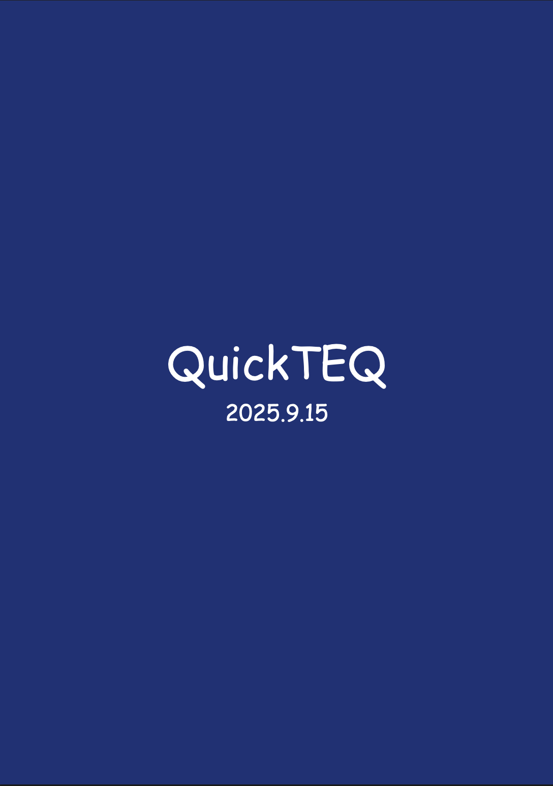
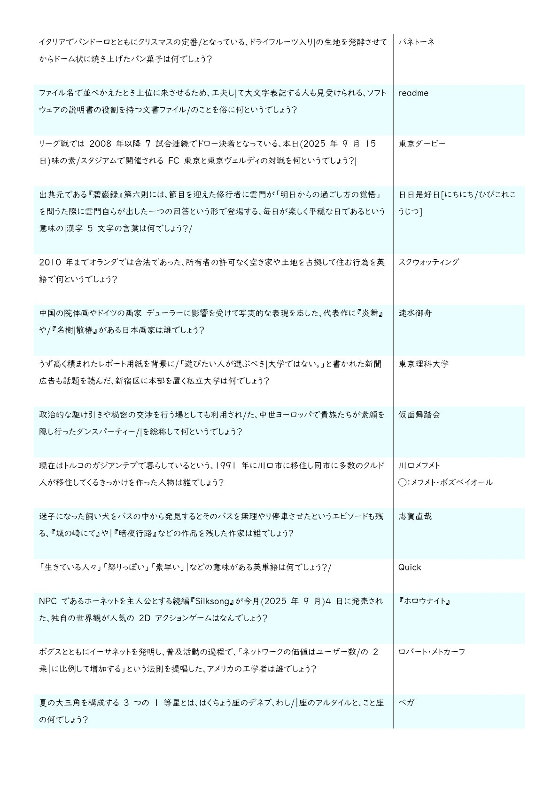

収録内容
-
概要
2025年9月15日に東京科学大学クイズ研究会で行われた企画「QuickTEQ」の記録集です。
当日の使用問題と正誤記録、部員によるコラムが収録されています。 - 問題数 700問
- ジャンル 各部員の手癖が詰まったノンジャンル
-
こんな方におすすめ
個性豊かな問題で早押しをしたい方
TEQの部員がどんな問題を作るのか気になる方 - ページ数 77ページ
- 発行 東京科学大学クイズ研究会 TEQ
サンプル問題

サンプルとして、各部員の1問目の問題を掲載いたします。
書式・難易度感の参考にしてください。
【注意】
- 持ち寄り企画のため、問題の被りがございます。
- 作問者によって傾向が大きく異なります。サンプル問題をご確認の上ご購入ください。
購入はこちら
BOOTHにて販売中です。
Boothで購入する